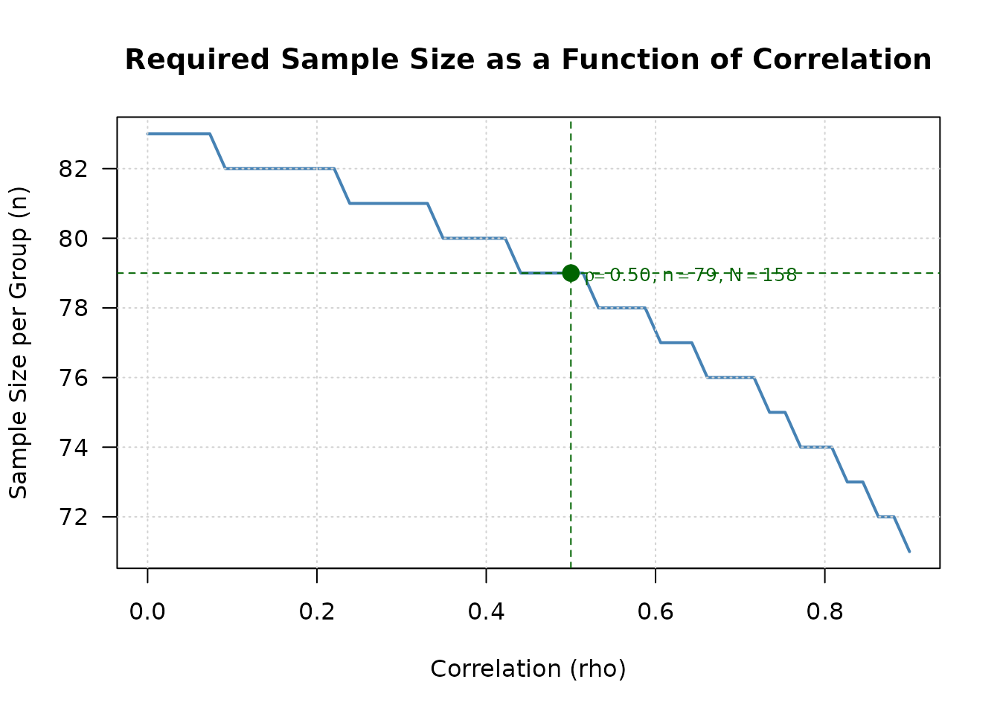
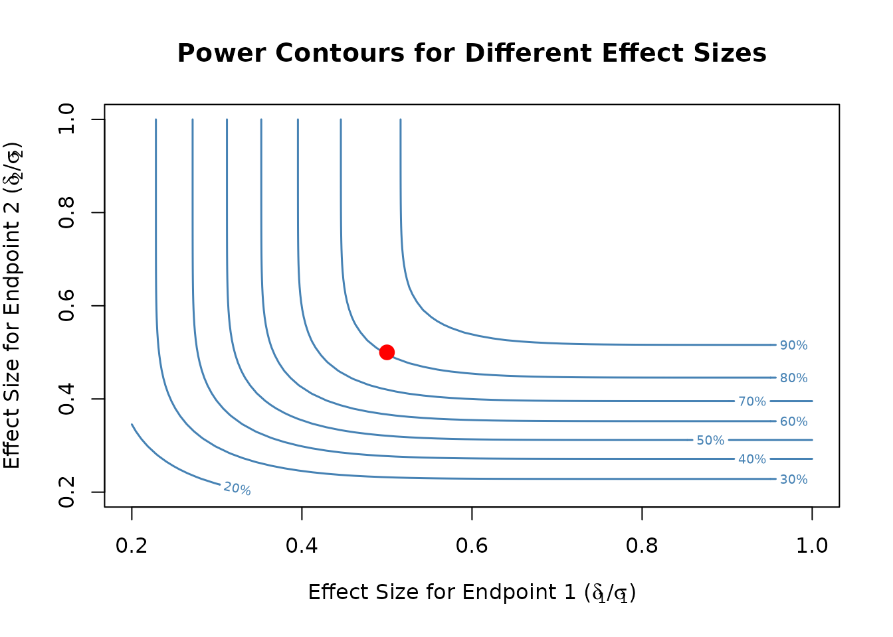

Two Continuous Co-Primary Endpoints
Source:vignettes/two-continuous-endpoints.Rmd
two-continuous-endpoints.RmdOverview
This vignette demonstrates sample size calculation and power analysis for clinical trials with two co-primary continuous endpoints using asymptotic normal approximation methods. The methodology is based on Sozu et al. (2011).
Background and Motivation
What are Co-Primary Endpoints?
In clinical trials, co-primary endpoints require demonstrating statistically significant treatment effects on all endpoints simultaneously. Unlike multiple primary endpoints (where success on any one endpoint is sufficient), co-primary endpoints require:
- Rejecting all null hypotheses at level
- No multiplicity adjustment needed for Type I error control
- Correlation consideration can improve efficiency
Clinical Examples
Co-primary continuous endpoints are common in:
- Alzheimer’s disease trials: Cognitive function (ADAS-cog) + Clinical global impression (CIBIC-plus)
- Irritable bowel syndrome (IBS) trials: Pain intensity and stool frequency of IBS with constipation (IBS-C) + Pain intensity and stool consistency of IBS with diarrhea (IBS-D)
Statistical Framework
Model and Assumptions
Consider a two-arm parallel-group superiority trial comparing treatment (group 1) with control (group 2). Let and denote the sample sizes in the two groups (i.e., total sample size is ), and define the allocation ratio .
For subject in group (: treatment, : control), we observe two continuous outcomes:
Endpoint ():
where:
- is the population mean for outcome in group
- is the common variance for outcome across both groups
Within-subject correlation: The two outcomes are correlated within each subject:
We assume common correlation across groups: .
Effect Size Parameterization
The treatment effect for endpoint is measured by:
Absolute difference:
Standardized effect size:
The standardized effect size is preferred as it is scale-free and facilitates comparison across studies.
Hypothesis Testing
For two co-primary endpoints, we test:
Null hypothesis: (at least one null hypothesis is true)
where for .
Alternative hypothesis: (both alternative hypotheses are true)
where for .
Decision rule: Reject if and only if both and are rejected at significance level .
Test Statistics
For each endpoint , the test statistic is:
Known variance case:
Unknown variance case:
where is the pooled sample standard deviation for endpoint .
Sample Size Calculation
Basic Example
Calculate sample size for a balanced design () with known variance:
# Design parameters
result <- ss2Continuous(
delta1 = 0.5, # Effect size for endpoint 1
delta2 = 0.5, # Effect size for endpoint 2
sd1 = 1, # Standard deviation for endpoint 1
sd2 = 1, # Standard deviation for endpoint 2
rho = 0.5, # Correlation between endpoints
r = 1, # Balanced allocation
alpha = 0.025, # One-sided significance level
beta = 0.2, # Type II error (80% power)
known_var = TRUE
)
print(result)
#>
#> Sample size calculation for two continuous co-primary endpoints
#>
#> n1 = 79
#> n2 = 79
#> N = 158
#> delta = 0.5, 0.5
#> sd = 1, 1
#> rho = 0.5
#> allocation = 1
#> alpha = 0.025
#> beta = 0.2
#> known_var = TRUEImpact of Correlation
Examine how correlation affects sample size:
# Calculate sample sizes for different correlations
correlations <- c(0, 0.3, 0.5, 0.8)
sample_sizes <- sapply(correlations, function(rho) {
ss2Continuous(
delta1 = 0.5, delta2 = 0.5,
sd1 = 1, sd2 = 1,
rho = rho, r = 1,
alpha = 0.025, beta = 0.2,
known_var = TRUE
)$N
})
# Create summary table
correlation_table <- data.frame(
Correlation = correlations,
Total_N = sample_sizes,
Reduction = c(0, round((1 - sample_sizes[-1]/sample_sizes[1]) * 100, 1))
)
kable(correlation_table,
caption = "Sample Size vs Correlation (delta = 0.5, alpha = 0.025, power = 0.8)",
col.names = c("Correlation (rho)", "Total N", "Reduction (%)"))| Correlation (rho) | Total N | Reduction (%) |
|---|---|---|
| 0.0 | 166 | 0.0 |
| 0.3 | 162 | 2.4 |
| 0.5 | 158 | 4.8 |
| 0.8 | 148 | 10.8 |
Key finding: At , approximately 11% reduction in sample size compared to .
Visualization with plot()
Visualize the relationship between correlation and sample size:
# Use plot method to visualize sample size vs correlation
plot(result, type = "sample_size_rho")
Visualize power contours for different effect sizes:
# Create contour plot for effect sizes
plot(result, type = "effect_contour")
Replicating Sozu et al. (2011) Table 1
We replicate Table 1 from Sozu et al. (2011) using the
design_table() function. This table shows sample sizes per
group for various combinations of standardized effect sizes.
# Create parameter grid (delta1 <= delta2)
param_grid <- expand.grid(
delta1 = c(0.2, 0.25, 0.3, 0.35, 0.4),
delta2 = c(0.2, 0.25, 0.3, 0.35, 0.4),
sd1 = 1,
sd2 = 1
) %>%
arrange(delta1, delta2) %>%
filter(delta2 >= delta1)
# Calculate sample sizes for different correlations
result_table <- design_table(
param_grid = param_grid,
rho_values = c(0, 0.3, 0.5, 0.8),
r = 1,
alpha = 0.025,
beta = 0.2,
endpoint_type = "continuous"
) %>%
mutate_at(vars(starts_with("rho_")), ~ . / 2) # Per-group sample size
# Display table
kable(result_table,
caption = "Table 1: Sample Sizes Per Group (Sozu et al. 2011, alpha = 0.025, power = 0.8)",
digits = 2)| delta1 | delta2 | sd1 | sd2 | rho_0.0 | rho_0.3 | rho_0.5 | rho_0.8 |
|---|---|---|---|---|---|---|---|
| 0.20 | 0.20 | 1 | 1 | 516 | 503 | 490 | 458 |
| 0.20 | 0.25 | 1 | 1 | 432 | 424 | 417 | 401 |
| 0.20 | 0.30 | 1 | 1 | 402 | 399 | 397 | 393 |
| 0.20 | 0.35 | 1 | 1 | 394 | 394 | 393 | 393 |
| 0.20 | 0.40 | 1 | 1 | 393 | 393 | 393 | 393 |
| 0.25 | 0.25 | 1 | 1 | 330 | 322 | 314 | 294 |
| 0.25 | 0.30 | 1 | 1 | 284 | 278 | 272 | 260 |
| 0.25 | 0.35 | 1 | 1 | 263 | 260 | 257 | 253 |
| 0.25 | 0.40 | 1 | 1 | 254 | 253 | 253 | 252 |
| 0.30 | 0.30 | 1 | 1 | 230 | 224 | 218 | 204 |
| 0.30 | 0.35 | 1 | 1 | 201 | 197 | 192 | 183 |
| 0.30 | 0.40 | 1 | 1 | 186 | 183 | 181 | 176 |
| 0.35 | 0.35 | 1 | 1 | 169 | 165 | 160 | 150 |
| 0.35 | 0.40 | 1 | 1 | 150 | 147 | 143 | 136 |
| 0.40 | 0.40 | 1 | 1 | 129 | 126 | 123 | 115 |
Interpretation:
- Each row represents a combination of standardized effect sizes ()
- Columns show sample size per group for different correlations ()
- Higher correlation leads to smaller required sample sizes
- When (equal effect sizes), the benefit of correlation is more pronounced
Power Calculation
Power for a Given Sample Size
Calculate power for a specific sample size:
# Calculate power with n1 = n2 = 100
power_result <- power2Continuous(
n1 = 100, n2 = 100,
delta1 = 0.5, delta2 = 0.5,
sd1 = 1, sd2 = 1,
rho = 0.5,
alpha = 0.025,
known_var = TRUE
)
print(power_result)
#>
#> Power calculation for two continuous co-primary endpoints
#>
#> n1 = 100
#> n2 = 100
#> delta = 0.5, 0.5
#> sd = 1, 1
#> rho = 0.5
#> alpha = 0.025
#> known_var = TRUE
#> power1 = 0.942438
#> power2 = 0.942438
#> powerCoprimary = 0.899732Power Verification
Verify that calculated sample size achieves target power:
# Calculate sample size
ss_result <- ss2Continuous(
delta1 = 0.5, delta2 = 0.5,
sd1 = 1, sd2 = 1,
rho = 0.5, r = 1,
alpha = 0.025, beta = 0.2,
known_var = TRUE
)
# Verify power with calculated sample size
power_check <- power2Continuous(
n1 = ss_result$n1, n2 = ss_result$n2,
delta1 = 0.5, delta2 = 0.5,
sd1 = 1, sd2 = 1,
rho = 0.5,
alpha = 0.025,
known_var = TRUE
)
cat("Calculated sample size per group:", ss_result$n2, "\n")
#> Calculated sample size per group: 79
cat("Target power: 0.80\n")
#> Target power: 0.80
cat("Achieved power:", round(power_check$powerCoprimary, 4), "\n")
#> Achieved power: 0.8042Unified Interface
The package provides a unified interface similar to
power.prop.test():
# Sample size calculation mode
twoCoprimary2Continuous(
delta1 = 0.5, delta2 = 0.5,
sd1 = 1, sd2 = 1,
rho = 0.5, power = 0.8, r = 1,
alpha = 0.025, known_var = TRUE
)
#>
#> Sample size calculation for two continuous co-primary endpoints
#>
#> n1 = 79
#> n2 = 79
#> N = 158
#> delta = 0.5, 0.5
#> sd = 1, 1
#> rho = 0.5
#> allocation = 1
#> alpha = 0.025
#> beta = 0.2
#> known_var = TRUE
# Power calculation mode
twoCoprimary2Continuous(
n1 = 100, n2 = 100,
delta1 = 0.5, delta2 = 0.5,
sd1 = 1, sd2 = 1,
rho = 0.5,
alpha = 0.025, known_var = TRUE
)
#>
#> Power calculation for two continuous co-primary endpoints
#>
#> n1 = 100
#> n2 = 100
#> delta = 0.5, 0.5
#> sd = 1, 1
#> rho = 0.5
#> alpha = 0.025
#> known_var = TRUE
#> power1 = 0.942438
#> power2 = 0.942438
#> powerCoprimary = 0.899732Unknown Variance Case
When variances are unknown, use -test with Monte Carlo simulation:
# Sample size calculation with unknown variance
ss_unknown <- ss2Continuous(
delta1 = 0.5, delta2 = 0.5,
sd1 = 1, sd2 = 1,
rho = 0.5, r = 1,
alpha = 0.025, beta = 0.2,
known_var = FALSE,
nMC = 10000 # Number of Monte Carlo simulations
)
print(ss_unknown)
#>
#> Sample size calculation for two continuous co-primary endpoints
#>
#> n1 = 80
#> n2 = 80
#> N = 160
#> delta = 0.5, 0.5
#> sd = 1, 1
#> rho = 0.5
#> allocation = 1
#> alpha = 0.025
#> beta = 0.2
#> known_var = FALSE
#> nMC = 10000Note: The unknown variance case requires more computation time due to Monte Carlo simulation.
Practical Considerations
Correlation Estimation
Methods to estimate correlation :
- Pilot studies: Small preliminary studies
- Historical data: Previous trials in the same disease area
- Literature review: Published studies with similar endpoints
- Expert opinion: Clinical judgment when data are unavailable
Conservative approach: Use lower correlation estimates to ensure adequate power.
Sensitivity Analysis
Always perform sensitivity analysis:
# Test robustness to correlation misspecification
assumed_rho <- 0.5
true_rhos <- c(0, 0.3, 0.5, 0.7, 0.9)
# Calculate sample size assuming rho = 0.5
ss_assumed <- ss2Continuous(
delta1 = 0.5, delta2 = 0.5,
sd1 = 1, sd2 = 1,
rho = assumed_rho, r = 1,
alpha = 0.025, beta = 0.2,
known_var = TRUE
)
# Calculate achieved power under different true correlations
sensitivity_results <- data.frame(
Assumed_rho = assumed_rho,
True_rho = true_rhos,
n_per_group = ss_assumed$n2,
Achieved_power = sapply(true_rhos, function(true_rho) {
power2Continuous(
n1 = ss_assumed$n1, n2 = ss_assumed$n2,
delta1 = 0.5, delta2 = 0.5,
sd1 = 1, sd2 = 1,
rho = true_rho,
alpha = 0.025,
known_var = TRUE
)$powerCoprimary
})
)
kable(sensitivity_results,
caption = "Sensitivity Analysis: Impact of Correlation Misspecification",
digits = 3,
col.names = c("Assumed rho", "True rho", "n per group", "Achieved Power"))| Assumed rho | True rho | n per group | Achieved Power |
|---|---|---|---|
| 0.5 | 0.0 | 79 | 0.777 |
| 0.5 | 0.3 | 79 | 0.791 |
| 0.5 | 0.5 | 79 | 0.804 |
| 0.5 | 0.7 | 79 | 0.821 |
| 0.5 | 0.9 | 79 | 0.846 |